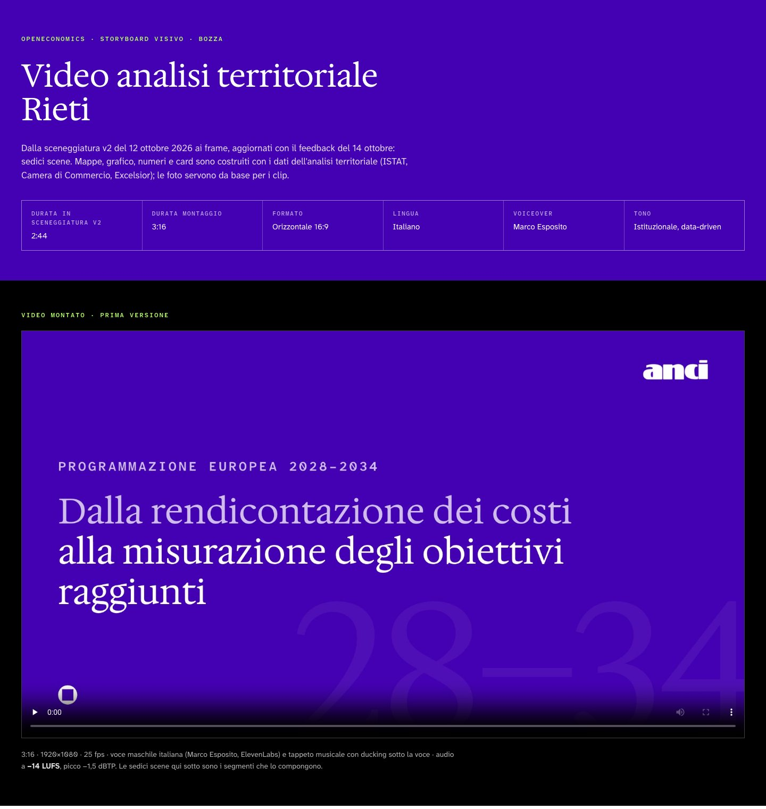
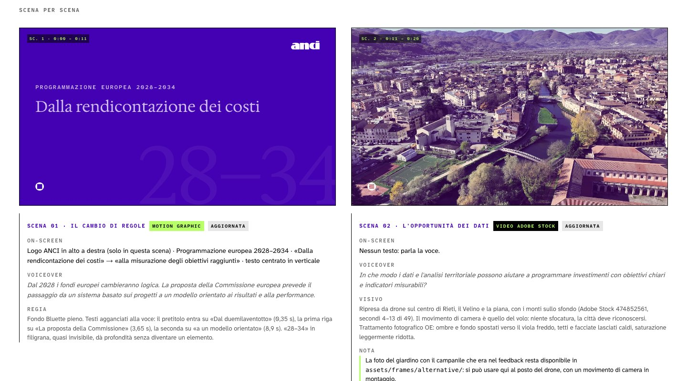
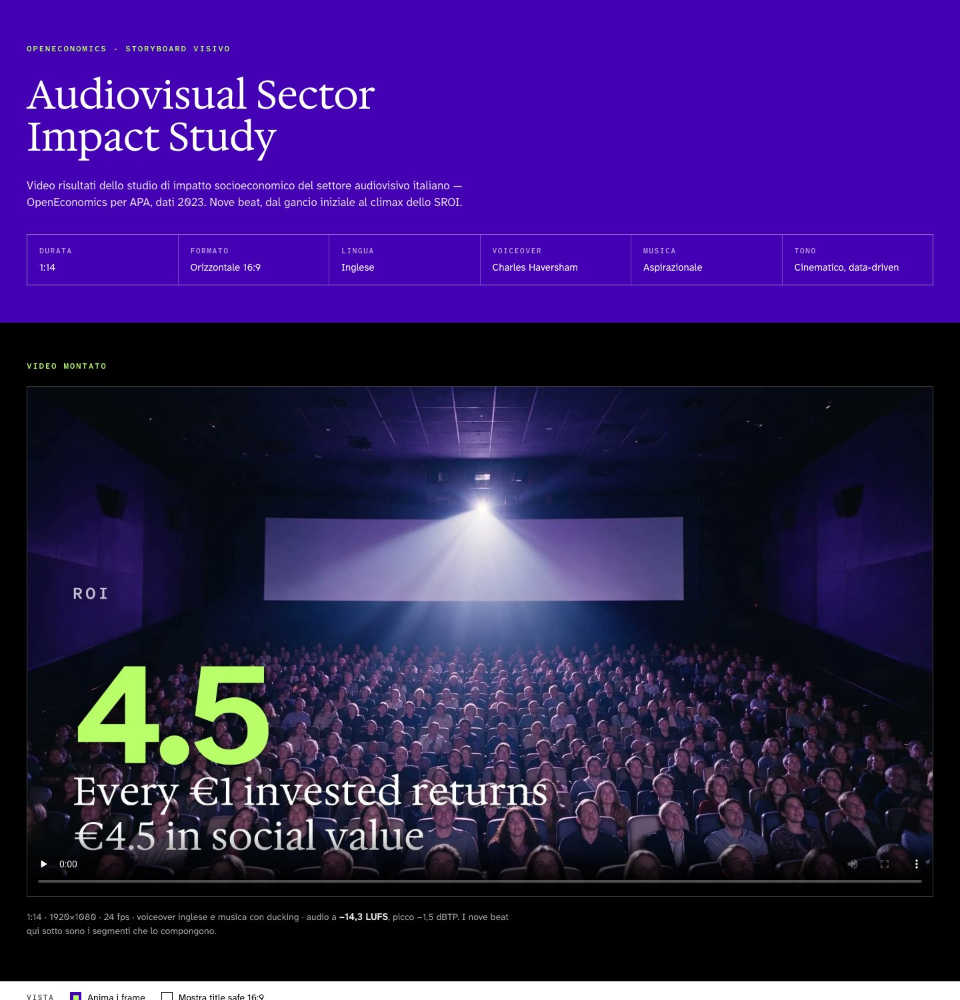
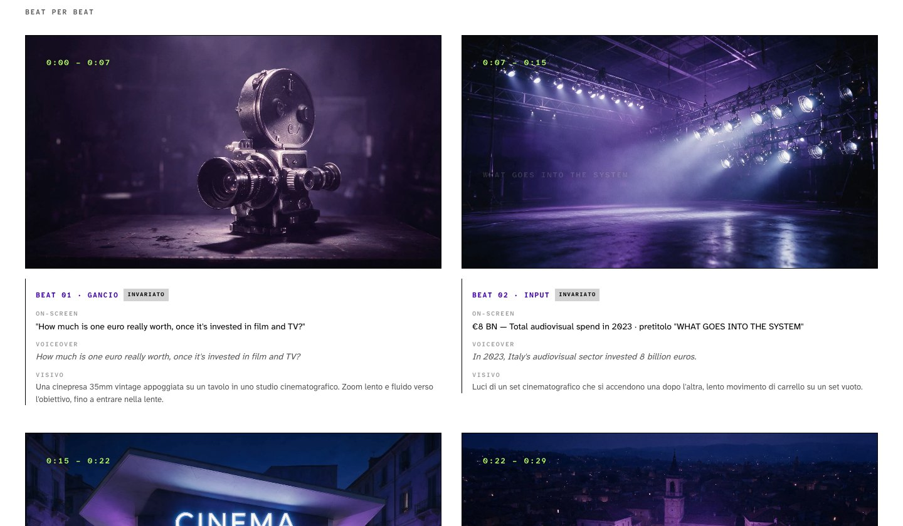
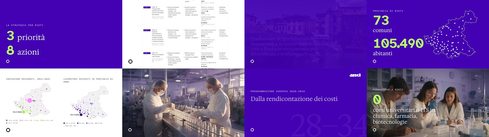
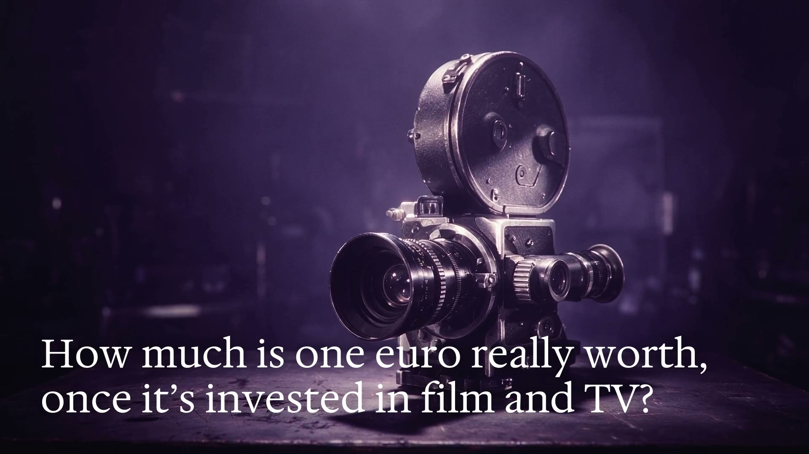
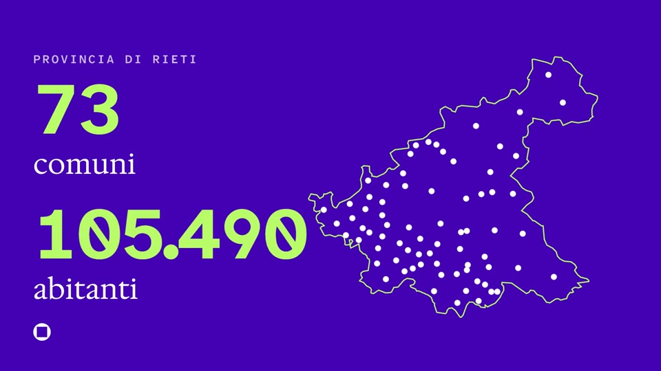
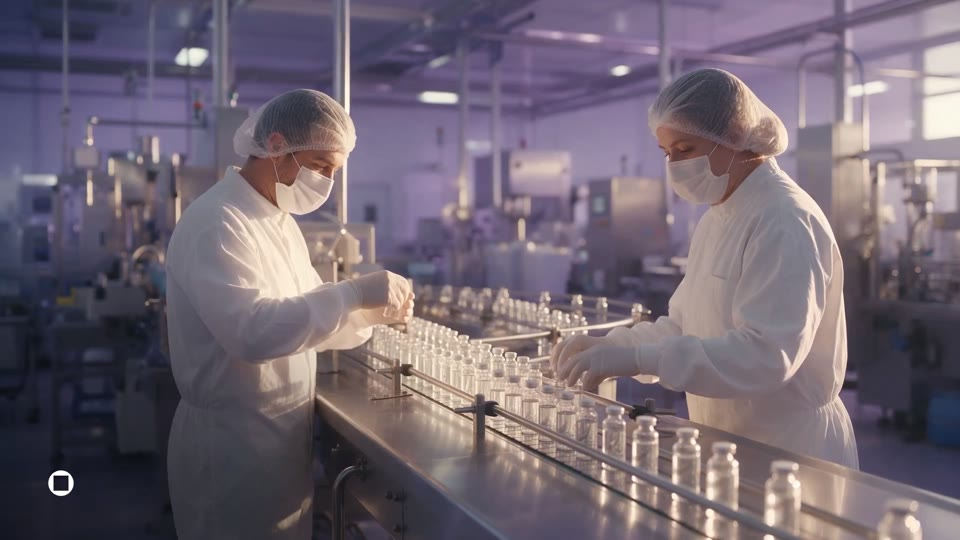
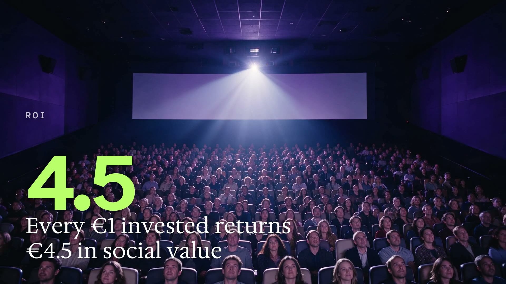

Come facciamo i video
OpenEconomics
Dal brief al file finale, passando per lo storyboard HTML. Il metodo usato per il video dell'Audiovisivo e per il video di Rieti.
Caso 1
Audiovisual Sector Impact Study · per APA · 1:14 · inglese
Caso 2
Analisi territoriale Rieti · con ANCI · 3:16 · italiano
Aggiornato
29 ottobre 2026 · Alessio Granella
Otto passi, sempre in quest'ordine
01
Brief e materiali
Script, sceneggiatura, dati. Si segnalano buchi e incongruenze.
02
Storyboard HTML
Una scheda per scena: frame 16:9, testi, voce, regia.
03
Immagini fisse
Un fotogramma per scena: AI, foto vera o grafica dati in codice.
04
Approvazione
Feedback scena per scena sulla pagina. Si rifà finché regge.
05
Animazione
L'immagine approvata diventa il primo frame del clip.
06
Testi e dati
Tipografia del design system impressa sopra il clip.
07
Voce e musica
Voiceover per battuta, poi tappeto musicale con ducking.
08
Montaggio
Python + ffmpeg. MP4 1080p, −14 LUFS.
Valgono per ogni video
Forma
- Orizzontale 16:9, 1920×1080.
- Caratteri, colori e trattamento foto solo dal design system OE.
- Fondo Bluette
#4400B3, numeri Lime#B9FF69: le uniche due tinte. - Dominante Bluette chiesta a ogni immagine, così le scene stanno insieme.
Metodo
- Luoghi reali: foto vere (Adobe Stock, Wikimedia) prima dell'AI.
- Immagini AI solo dopo conferma di Alessio.
- Ogni dato a schermo ha una fonte; le incongruenze si segnalano, non si colmano.
- Clip generati già alla durata finale, non tagliati dopo.
01
Brief e materiali di partenza
Entra
- Script e storyboard in Word (Audiovisivo)
- Sceneggiatura PPTX con note di regia (Rieti)
- Dati: studio o minisito dell'analisi
Si fa
- Lettura scena per scena
- Elenco segnaposto e prompt mancanti
- Verifica dei numeri contro la fonte
Esce
- Lista dei problemi da chiudere
- Elenco scene con durata e battuta
EsempiAudiovisivo: quattro beat con «scena molto bella», un aereo rimasto dal video Difesa, formato passato da 9:16 a 16:9. Rieti: export 2025 confrontato con dati 2024 su basi diverse, voce e mappe in ordine inverso.
02
Storyboard HTML
Entra
- Elenco scene del passo 01
- Token e font del design system
Si fa
- Una pagina con tutte le scene animate
- Pubblicazione su GitHub Pages,
noindex
Esce
- Link da girare per il feedback
- In Rieti: la sorgente stessa del video
PerchéAl posto del Word con le tabelle: chi commenta vede la scena animata e scrive sulla scena giusta.
03
Immagini fisse
Entra
- Prompt per ogni scena
- Regia: soggetto, luce, movimento
Si fa
- AI: Magnific dal connettore
- Foto vere per i luoghi reali
- Mappe, grafici e card in codice dai dati veri
Esce
- Un fotogramma 16:9 per scena
- Versioni scartate conservate
Prompt tipoSoggetto caldo in primo piano, fondo sfocato viola e indaco, movimento lento (push-in, carrello). Niente grana o look vintage.
Dalla scena approvata al file finale
| Passo | Cosa si fa | Strumento | Uscita |
|---|---|---|---|
| 04 Approvazione | Feedback sulla pagina, badge di stato per scena. Quasi ogni scena arriva alla terza versione. | Storyboard online, PDF di feedback | Scene approvate |
| 05 Animazione | L'immagine approvata è il primo frame. Durata decisa prima. | Seedance 2.0 Pro / 2.5 via Magnific | assets/clips/ |
| 06 Testi e dati | Pretitolo, numero e frase impressi con entrata animata e contatore. | burn_titles.py · render_scenes.cjs | Clip titolati |
| 07 Voce e musica | Una battuta per scena, poi la musica sotto con ducking. | ElevenLabs via Magnific | assets/audio/ |
| 08 Montaggio | Segmenti in sequenza, card di chiusura, mix e normalizzazione. | assemble_video.py | assets/final/ |
I numeri non li scrive l'AI
Un'immagine fissa
75
crediti
Il clip che ne deriva
6.300
crediti
- Cambiare una cifra è una riga di codice, non una rigenerazione.
- La tipografia resta identica in tutte le scene.
Misure di riferimento
Gerarchia dei testi a schermo
| Livello | Carattere | Misura | Colore |
|---|---|---|---|
| Pretitolo | Atkinson Mono 600, maiuscolo | 1,8% larghezza | Bianco 74% |
| Numero | Atkinson Mono 700 | 11% (9 · 16) | Lime |
| Frase | Hedvig Letters Serif | 4,3% (domande 4,9%) | Bianco |
Blocco in basso a sinistra, margine 5%, larghezza massima 55%. Ombra neutra sfumata, mai velature colorate.
Audio
- Loudness finale −14 LUFS, picco −1,5 dBTP.
- La musica scende quando entra la voce e risale nelle pause.
- Audiovisivo: musica −15,8 dB sotto la voce, −21,3 dB al beat 02.
- Rieti: pause interne della voce accorciate a 0,35 s.
Una pagina sola, una scheda per scena

- Testata: titolo, fonte, durata, formato, lingua, voce, tono.
- Video montato in alto, appena esiste.
- Barra di vista: anima i frame, title safe 16:9, frame grandi.
- Schede scena: frame con timecode, on-screen, voiceover, regia o prompt, nota.
- Badge di stato: aggiornata, nuova, da verificare.
- Feedback: cosa è applicato e cosa resta aperto.
La scheda di una scena

Come si pubblica
- Repo pubblico su GitHub, pagina esclusa dai motori di ricerca (
noindex+robots.txt): la vede solo chi ha il link. - Ripubblicazione dopo una modifica:
./deploy.sh "messaggio". - Repo:
oe-storyboard-audiovisivoeoe-storyboard-rieti. - La pagina si aggiorna a ogni giro di feedback e alla fine ospita il video montato.

Due modi di usare la stessa pagina
Audiovisivo · pagina come riferimento

- Lo storyboard mostra i clip in loop con i testi sovrapposti.
- Il video si costruisce fuori: clip AI →
burn_titles.py→assemble_video.py.
Rieti · pagina come sorgente

- Mappe, grafici e card sono animazioni della pagina, costruite sui dati del minisito.
- Chrome headless registra la pagina fotogramma per fotogramma, 25 fps.
Rifare il video di Rieti
| # | Comando | Cosa fa |
|---|---|---|
| 1 | build_timeline.json | Durata di ogni scena, agganciata alla battuta di voce |
| 2 | node render_scenes.cjs build_timeline.json [scene] | Rende le scene dalla pagina (serve puppeteer-core e Google Chrome) |
| 3 | python3 assemble_video.py | Sovrappone i livelli ai clip, aggiunge voce e musica, esporta l'MP4 |
- Le scene con un video sotto escono come livello trasparente (ProRes 4444).
- Una correzione alla pagina passa nel video rilanciando i passi 2 e 3.
Audiovisivo e Rieti
| Audiovisivo | Rieti | |
|---|---|---|
| Fonte testi | Script e storyboard in Word, 9 beat | Sceneggiatura v2 in PPTX, note di regia nelle note |
| Fonte dati | Numeri chiave dello studio | Minisito dell'analisi (ISTAT, Camera di Commercio, Excelsior) |
| Scene | 9 (8 generate + chiusura in codice) | 16 (motion graphic, dati, clip AI, stock, screencast) |
| Immagini | Tutte AI, Magnific | Drone e ponte Adobe Stock, 3 scene AI, mappe e grafici in codice |
| Testi a schermo | burn_titles.py (PIL + ffmpeg) | Renderizzati dalla pagina HTML |
| Voce | Charles Haversham, inglese britannico | Marco Esposito, italiano |
| Feedback | Iterazioni su ogni scena, montaggio da 1:55 a 1:14 | PDF del 14 ottobre: logo ANCI, monogramma OE, 4 scene nuove |
| File finale | 1:14 · 1920×1080 · 24 fps · −13,9 LUFS | 3:16 · 1920×1080 · 25 fps · −14 LUFS |
Previsto nel brief e usato davvero
| Fase | Previsto | Usato |
|---|---|---|
| Immagini e video | Freepik | Magnific via connettore |
| Voce | ElevenLabs | ElevenLabs via Magnific |
| Musica | Non prevista | Generata |
| Testi e montaggio | CapCut | Python + ffmpeg |
| Condivisione | Non prevista | Storyboard HTML su GitHub Pages |
Checklist e cartelle
- Brief letto scena per scena, dati dubbi segnalati
- Fonte di ogni numero annotata
- Storyboard HTML pubblicato con
noindex - Conferma prima di generare immagini AI
- Frame fissi approvati prima dei clip
- Durata di ogni clip decisa prima di generarlo
- Voce scelta su campioni, battute separate
- Audio a −14 LUFS, storyboard e README aggiornati
Materiale/ | Brief, sceneggiatura, feedback |
Storyboard-*.html | La pagina |
assets/frames/ | Fotogrammi fissi |
assets/clips/ | Clip senza testo |
assets/audio/ | Voce e musica |
assets/final/ | Video montato |
*.py · *.cjs | Render e montaggio |
deploy.sh · README.md | Pubblicazione e stato |
I progetti da cui ripartire
OpenEconomics/progetti/Video Audiovisivo/OpenEconomics/progetti/Video Rieti/



